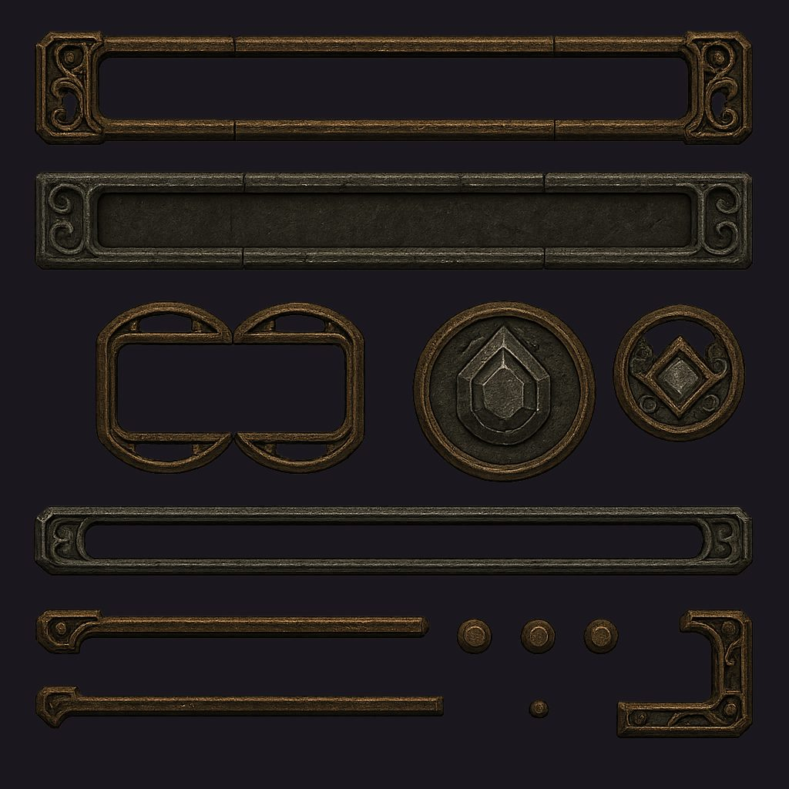
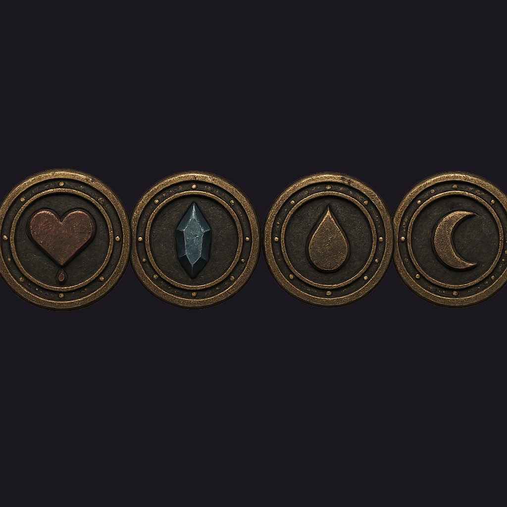
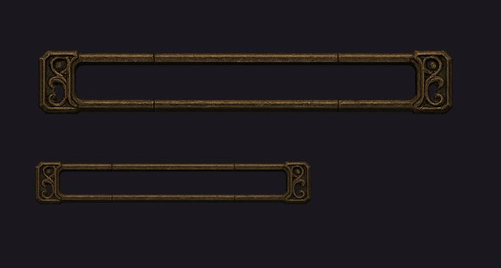

地城迴響 · 素材確認
目前的血條與魔力條是純色矩形。這一版改成 AI 生成的靜態外框與底座，動態效果（脈動、流動、掉血殘影）仍然由程式畫。以下是候選素材，還沒有套進遊戲。
圖上的深色是網頁的底色，不是素材的一部分。素材本身背景是全透明的，框的內部也是真的挖空，填色會畫在下面。

第一張大圖裡的徽記只給了水晶跟菱形，沒有生命要用的心形，所以補生了一張。這張的四枚共用同一套邊框，看起來才像一組的。

素材在 1024 像素的畫布上都很好看，問題是遊戲裡的血條只有約 31 點高。所以先確認過縮小之後還讀得出來，才拿來給你看。

中段有兩道接縫線。直接平鋪的話那兩道線會週期性重複，看起來像血條上有裂痕。切圖時我會避開接縫取樣，這是切圖階段解決的事，不用重生素材。
動態效果還沒做。這一頁只有靜態的框與槽。流動感、低血脈動、掉血後追上來的白色殘影、回復時的掃光，都是套用之後才會加的程式效果。
只驗過「縮小後讀得出來」，沒驗過「放進 HUD 好不好看」。要等真的套進去、旁邊擺上藥水鍵與搖桿才知道，那一步要你先點頭。
| 要決定的 | 為什麼輪不到我決定 |
|---|---|
| 這套素材採不採用 | 流程規定：沒有你的明確同意，我不會把生成的素材切檔套進遊戲專案。這是美感取捨，不是對錯。 |
| 血條與魔力條要不要用同一副框 | 共用比較整齊、也省素材；各給一套顏色差異更明顯，代價是畫面變花。我的建議是共用同一副框，靠填色與徽記區分——HUD 上元件已經很多了。 |
| 體力條要不要一起換 | 它就在血魔條正下方。不換的話它會是那一區唯一還是純色矩形的東西，對比之下更明顯。建議一起換，素材已經生好了，不用多花錢。 |
| 項目 | 方式 | 費用 |
|---|---|---|
| 素材彙整大圖 | gpt-image-1 原生透明 | $0.20 |
| 徽記補生（心形沒生對） | gpt-image-1 原生透明 | $0.20 |
| 合計 | $0.40 |
沒有走去背那條流程。UI 元素用 gpt-image-1 直接生透明背景，比「生成再去背」乾淨——去背是把外圍背景挖掉，挖不到框的內部，那個洞才是這批素材的關鍵。